Transmission removal (MUA)
1. Battery ground cable disconnect
1. Disconnect the battery ground cable from the battery.
Caution
- Do not disconnect within 1 minute after turning OFF the ignition switch.
Note
- The following applies to 4WD.
Caution
- Before removing the transfer assembly from the vehicle, change the transfer mode to 2WD using the 2-4 switch.
2. Shift lever knob removal
1. Remove the shift lever knob from the shift lever.
3. Console box removal
1. Remove the shift console cover from the console box.
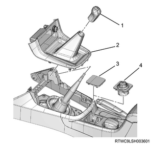
- Shift lever knob
- Shift console cover
- Cover (2WD models)
- 4WD switch (4WD models)
Note
- Disconnect the cigarette lighter connector.
- The following applies to 2WD.
2. Remove the cover from the console box.
Note
- The following applies to 4WD.
3. Remove the 4WD switch from the console box.
Note
- Disconnect the 4WD switch connector.
4. Remove the console box from the floor.
Note
- Remove the parking brake cover from the console box.
- Remove the 2 clips and the 1 screw.
- Open the console box cover and remove 2 screws.
- Remove the console box backward.
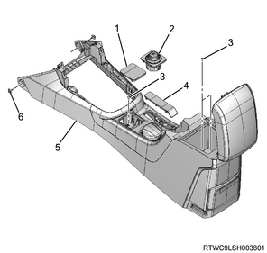
- Cover (2WD models)
- 4WD switch (4WD models)
- Screw
- Parking brake cover
- Console box
- Clip
4. Grommet assembly removal
1. Remove the grommet assembly from the floor panel.
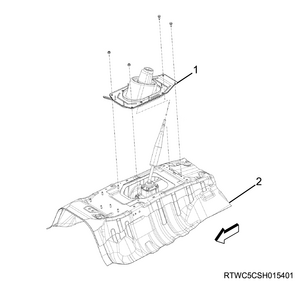
- Grommet assembly
- Floor panel
5. Shift lever removal
1. Remove the shift lever from the transmission.
6. Engine hood assembly removal
1. Open the engine hood.
Note
- Support the engine hood.
2. Remove the hinge bolt from the engine hood.
Note
- Before removing the hinge from the engine hood, put a marking of the hinge location for putting the hinge back in place.
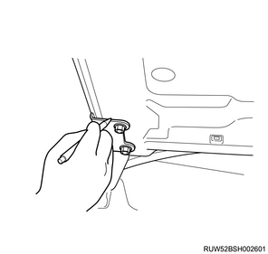
7. Engine cover removal
1. Remove the engine cover from the engine.

- Engine cover
8. Wiper arm cover removal
1. Remove the wiper arm cover from the wiper arm.
9. Wiper arm removal
1. Remove the wiper arm from vehicle.
Note
- Remove the nut to remove the wiper arm and the blade.
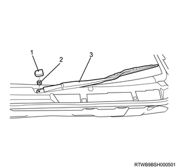
- Wiper arm cover
- Nut
- Wiper arm, blade
10. Side cowl cover removal
1. Remove the side cowl cover from the body.

- Side cowl cover
11. Cowl cover removal
1. Remove the cowl cover from the body.
Note
- Remove the washer hose.
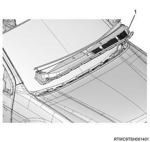
- Cowl cover
12. Wiper linkage disconnect
1. Disconnect the wiper linkage from vehicle.
Note
- Remove the bolt and nut from the wiper linkage.
- Remove the connector from the wiper motor.

- Nut
- Bolt
13. Cowl panel removal
1. Remove the cowl panel from vehicle.
Note
- Remove the 8 bolts.

14. Transmission preparation
1. Raise vehicle using the jack.
Note
- Use a suitable stand to support the vehicle.
15. Rear propeller shaft assembly removal
16. Front propeller shaft assembly removal
Note
- The following applies to 4WD.
1. Remove the front propeller shaft assembly from vehicle.
Note
- Remove the exhaust and the transfer protector.
- Put alignment marks on the flanges on both the front and rear sides of the front propeller shaft.
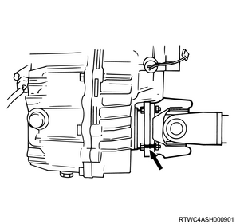
Note
- Remove the bolt, nut and washer on the front axle side.
- Remove the bolt, nut and washer on the transfer side.
- Remove the front propeller shaft assembly.
17. Engine harness disconnect
Note
- The following applies to 2WD.
1. Disconnect the engine harness from the connector.
Note
- Disconnect the neutral switch, backup light switch, and vehicle speed sensor.
- The following applies to 4WD.
- Disconnect the transmission side neutral switch, backup switch, actuator, 2-4 switch, transfer side neutral switch, and vehicle speed sensor.
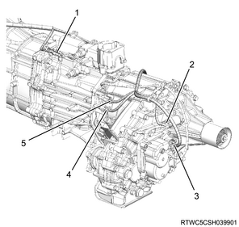
- Transmission side neutral switch connector, backup switch connector
- Vehicle speed sensor connector, without ABS
- Actuator connector
- 2-4 switch connector
- Transfer side neutral switch connector
18. Clutch slave cylinder removal
1. Remove the clutch slave cylinder from the transmission.
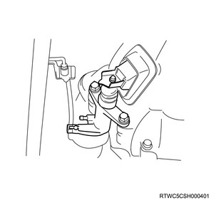
19. Transmission crossmember removal
1. Install the front engine hanger to the cylinder head.
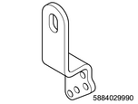
SST: 5-8840-2999-0 - front engine hanger
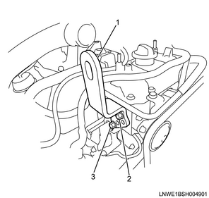
- Front engine hanger
- M10×1.5×25mm
- M10×1.5×25mm
2. Install the rear engine hanger to the cylinder head.
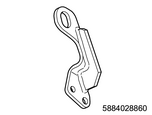
SST: 5-8840-2886-0 - rear engine hanger
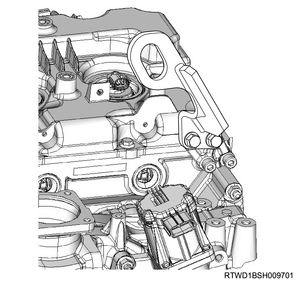
Tightening torque： 25 N・m { 2.5 kgf・m / 18 lb・ft }
3. Install the wire to the engine hanger and the hoist.
Note
- Hold up the engine as high as not to be lifted up.
4. Hold the transmission using the jack.
Note
- Support the transmission with a transmission jack.
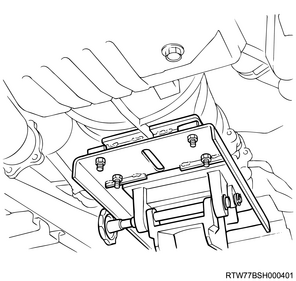
5. Remove the brace from the frame and the transmission crossmember.
Note
- Remove the bolt from the braces.
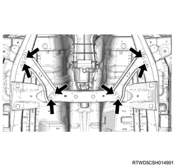
6. Remove the transmission crossmember from the frame.
Note
- Remove the nut fixed on the transmission cross member.
- The following applies to 2WD.
- Remove the nut fixed on the transmission.
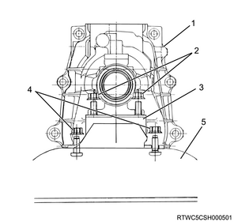
- Transmission
- Transmission rear section installation nut
- Cushion rubber
- Cross member rear section installation nut
- Transmission cross member
Note
- The following applies to 4WD.
- Remove the bolt fixed on the transmission.
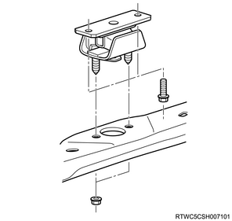
Note
- Remove the 4 fixing bolts and nuts, and then remove the middle parts of the transmission cross member.
- The following applies to 2WD.
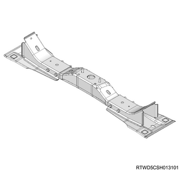
Note
- The following applies to 4WD.
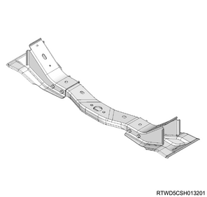
Note
- Remove the cushion rubber.
20. Starter motor removal
21. Transmission removal
1. Remove the transmission from the engine.
Note
- The following applies to 2WD.
- Remove the transmission and engine tightening bolts.
- The following applies to 4WD.
- Remove the transmission and transfer.
22. Transfer assembly removal
Note
- The following applies to 4WD.
1. Remove the transfer assembly from the transmission.